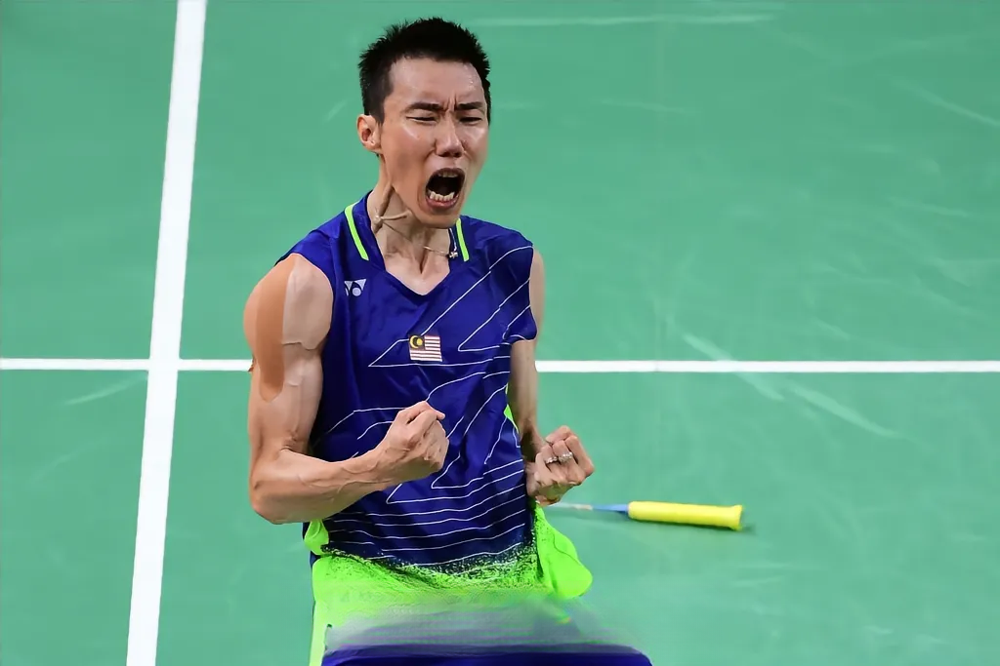
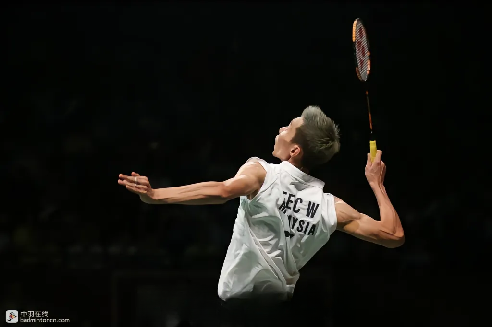
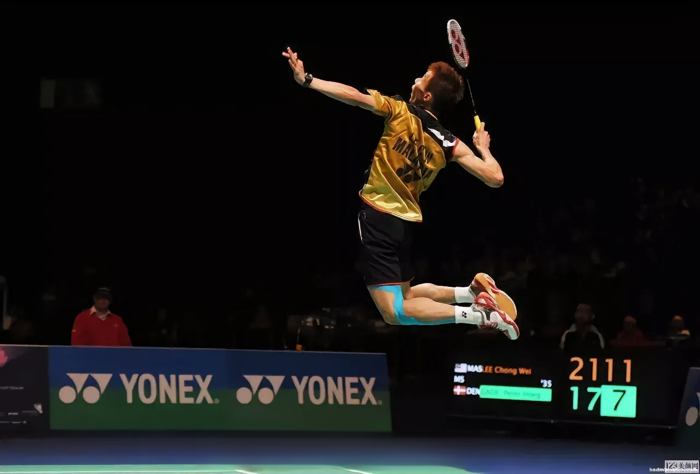

| 首页 | 人生经历 | 重要比赛 | 个人荣誉 | 励志语录 |
|---|
崭露头角 |
|
|---|---|
| 李宗伟于1982年10月21日出生在马来西亚槟城。他的家庭并不富裕，父亲打短工，母亲是家庭主妇。小时候李宗伟为了长高曾打篮球，但因皮肤晒黑被母亲禁止，11岁时他随父亲去羽毛球馆玩耍，展现出良好的协调性，被教练收为徒弟。此后，李宗伟凭借努力，17岁时入选马来西亚国家队。 |  |
如日中天 |
|
|---|---|
| 2004年，22岁的李宗伟夺得马来西亚公开赛男单冠军，开始崭露头角。之后他逐渐成为马来西亚羽毛球的新“一哥”。在奥运会赛场上，2008年北京奥运会、2012年伦敦奥运会、2016年里约奥运会，李宗伟均闯入男单决赛，但都遗憾地获得亚军。他与林丹的多次对决成为羽坛经典，虽在与林丹的较量中胜少负多，但他的实力依然备受认可。 |  |
王者落幕 |
|
|---|---|
| 命运多舛，2018年李宗伟被查出患有鼻咽癌。经过艰苦的治疗，他战胜了病魔。但由于身体原因，2019年6月13日，李宗伟宣布退役。在其19年的职业生涯中，李宗伟共斩获69个公开赛男单冠军，还曾创下349周的羽坛最长世界第一纪录。退役后，他积极参与羽毛球的推广和慈善活动。李宗伟的坚韧、拼搏精神以及对羽毛球的热爱，使他成为羽坛的传奇人物，赢得了众多球迷的尊敬和喜爱。 |  |